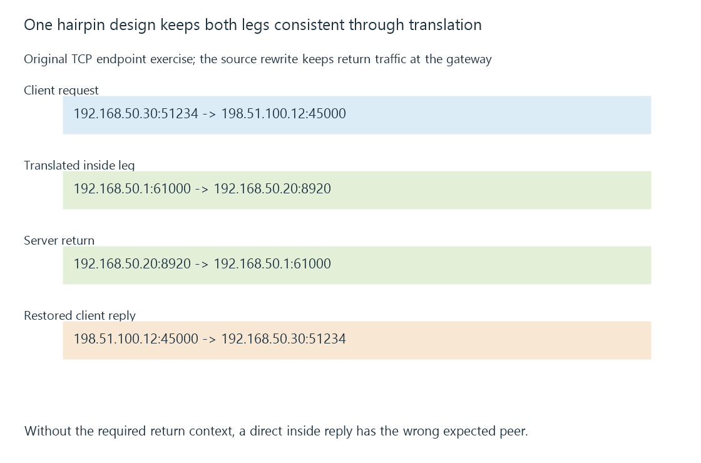

NAT loopback and same-network public endpoints
NAT loopback lets an inside client use an outside mapped endpoint for an inside service, with compatible translation and return routing keeping the client’s expected peer consistent.
A server URL works from mobile data but fails when the same phone rejoins home Wi-Fi. If the name still resolves to the gateway’s outside endpoint, the home request now needs a path back inside.
NAT loopback, also called hairpin NAT, supplies that return-to-inside behavior.
The final service is inside even though the selected endpoint looks outside
Assume an original mapping from the documentation outside endpoint 198.51.100.12:45000 to a declared server listener at 192.168.50.20:8920.
A LAN client at 192.168.50.30:51234 sends toward the outside endpoint. The gateway must recognize and redirect that traffic to the inside service rather than treating it only as an ordinary internet-bound request.

The remote-client mapping and the inside-client hairpin behavior are related capabilities. A gateway supporting one does not prove the other is enabled or usable.
The return route must preserve the expected peer
Suppose the gateway changes only the destination and leaves the client’s original LAN source unchanged.
The server then sees a request from its local neighbor 192.168.50.30. It can send a direct local reply from 192.168.50.20:8920, bypassing the gateway’s reverse translation.
The client, however, began a flow to 198.51.100.12:45000. A reply from the different inside endpoint does not match that expected peer under this simple connection model.
The routing topology therefore matters alongside the destination rewrite.
One design also translates the inside source
Here is an original complete endpoint exercise:
{
"protocol": "tcp",
"original": {
"source": "192.168.50.30:51234",
"destination": "198.51.100.12:45000"
},
"insideLeg": {
"source": "192.168.50.1:61000",
"destination": "192.168.50.20:8920"
},
"serverReply": {
"source": "192.168.50.20:8920",
"destination": "192.168.50.1:61000"
},
"clientReply": {
"source": "198.51.100.12:45000",
"destination": "192.168.50.30:51234"
}
}
The gateway’s inside address and chosen source port make the server return through it. Its state then reverses the appropriate fields so the client receives a reply from the endpoint it selected.
These are explanatory fields, not configured rules or captured packets. A gateway can implement another valid hairpin design; the example isolates the return-route requirement.
The server may observe a translated client
In this design, the origin’s socket peer is 192.168.50.1 rather than the original LAN client address.
That can affect application address classification, logs or per-address policy. It is another reason to keep path and observed peer separate.
An application cannot infer every earlier address simply from the translated socket peer.
Split DNS can select a direct inside endpoint instead
A home resolver can return a suitable local destination for the same hostname, avoiding this outside/hairpin route.
That split-DNS design still needs the same requested scheme, port and path to work at its inside endpoint. Replacing only the address can leave a port mismatch.
See Also
- Split DNS and location-dependent server endpoints
- Port forwarding and the complete inbound path
- NAT and address/port translation state
- Local and remote connections to Emby